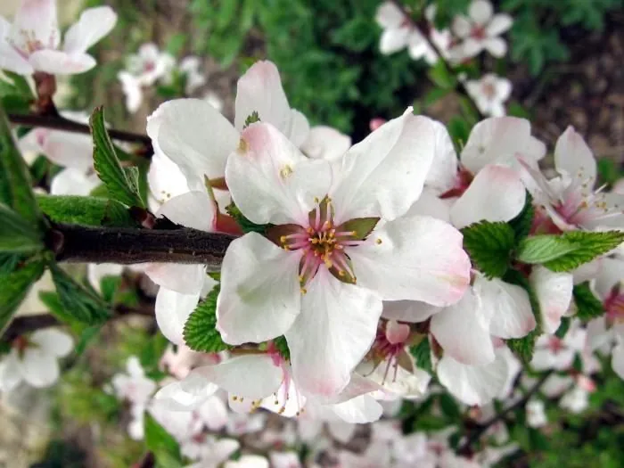

灌木与花木 · 植物界
毛樱桃 Prunus tomentosa

蔷薇科落叶灌木，早春开白色花，初夏结红色小核果，果可食用，是北方山地与庭院常见的观花观果灌木。
- 分类
- 门被子植物门纲木兰纲目蔷薇目科蔷薇科属李属
- 栖息环境
- 山坡灌丛、林缘与庭院，耐寒耐旱
- 地理分布
- 中国华北、东北、西北；朝鲜半岛、日本有分布
- 保护级别
- 暂无评估；中国未列入国家重点保护野生植物名录
物种志
毛樱桃为蔷薇科李属落叶灌木，高 1–3 米，枝条粗壮，幼枝密被绒毛。叶互生，倒卵形至椭圆形，边缘具锯齿，叶背密生绒毛。花单生或 2 朵并生，白色至淡粉色，花瓣 5 枚，花期 4–5 月，先叶或与叶同时开放；果实为核果，近球形，成熟时红色，果期 6–7 月。
毛樱桃原产中国华北、东北及西北山地，生于山坡灌丛与林缘，朝鲜半岛、日本也有分布。它喜光，耐寒、耐旱、耐瘠薄，适宜排水良好的砂质壤土。早春白花满枝，初夏红果累累，是北方山地与庭院常见的观花观果灌木；果实酸甜可食，可酿酒、制酱，种仁入药称“大李仁”，有润肠通便之效。栽培以分株、扦插和播种繁殖为主。
形态与习性
- 株高1–3 米，幼枝密被绒毛
- 花期4–5 月，花白色至淡粉色
- 果期6–7 月，核果红色
- 光照喜光，阳光充足结果多
- 水分耐旱，忌积水
- 土壤排水良好的砂质壤土
- 主要用途观花观果，果可食，种仁入药
趣味知识
- 毛樱桃的叶片和幼枝密生绒毛，因此得名。
- 它早春先叶开花，是北方山地最早开花的灌木之一。
- 果实酸甜可食，可酿酒、制酱，但果肉较薄。
- 种仁入药称“大李仁”，有润肠通便之效。